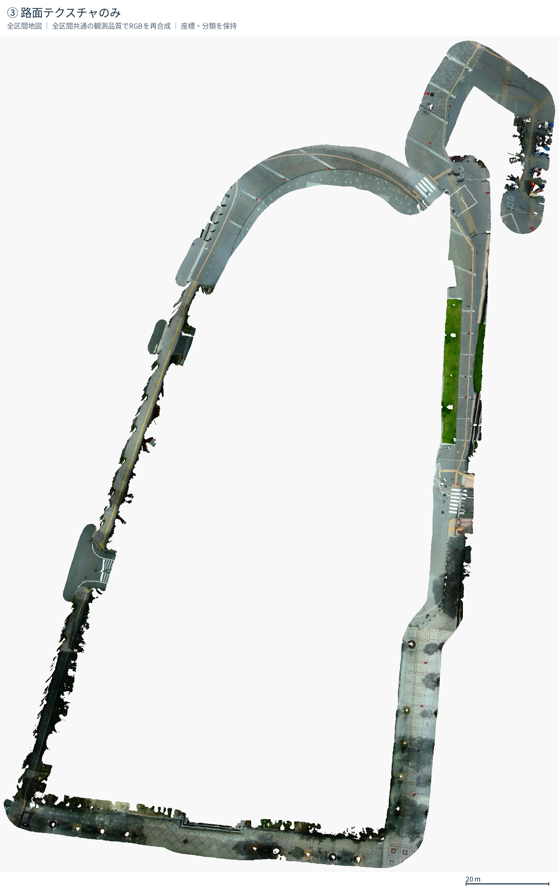
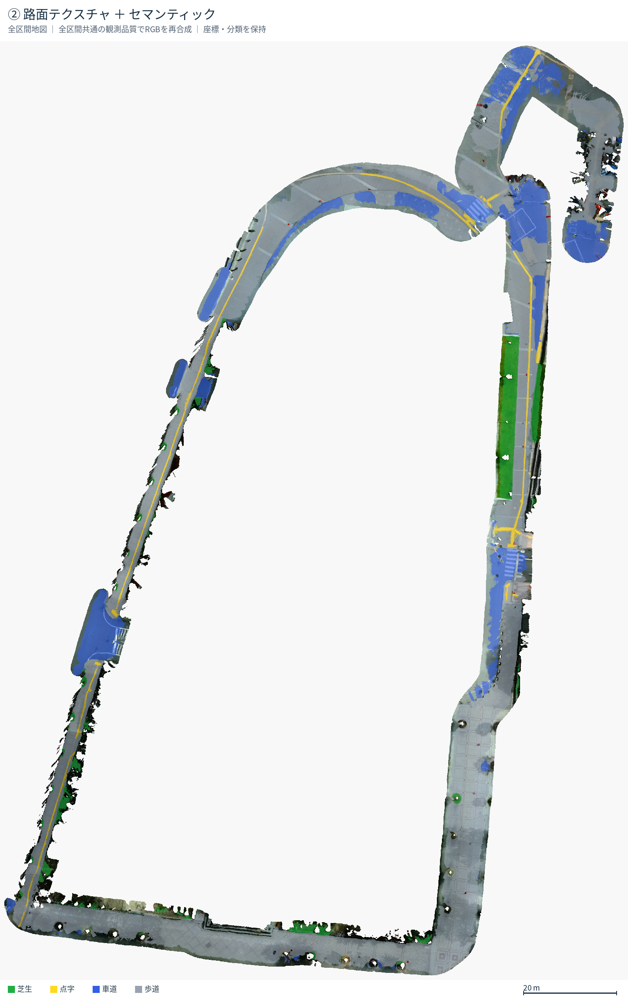
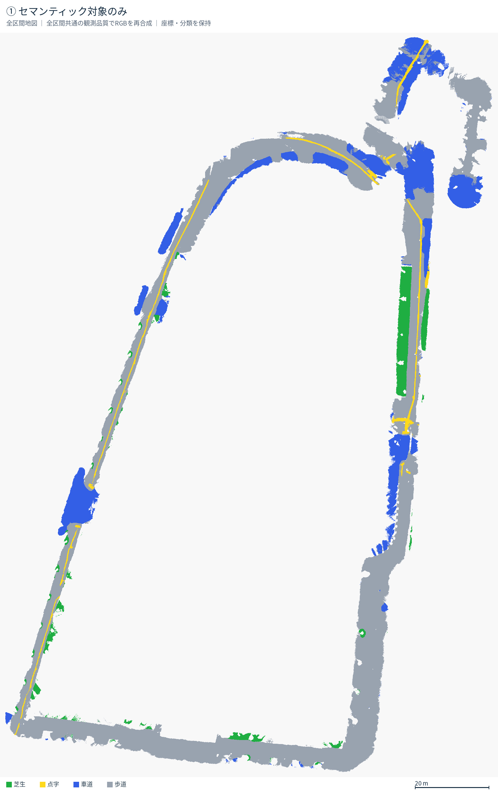
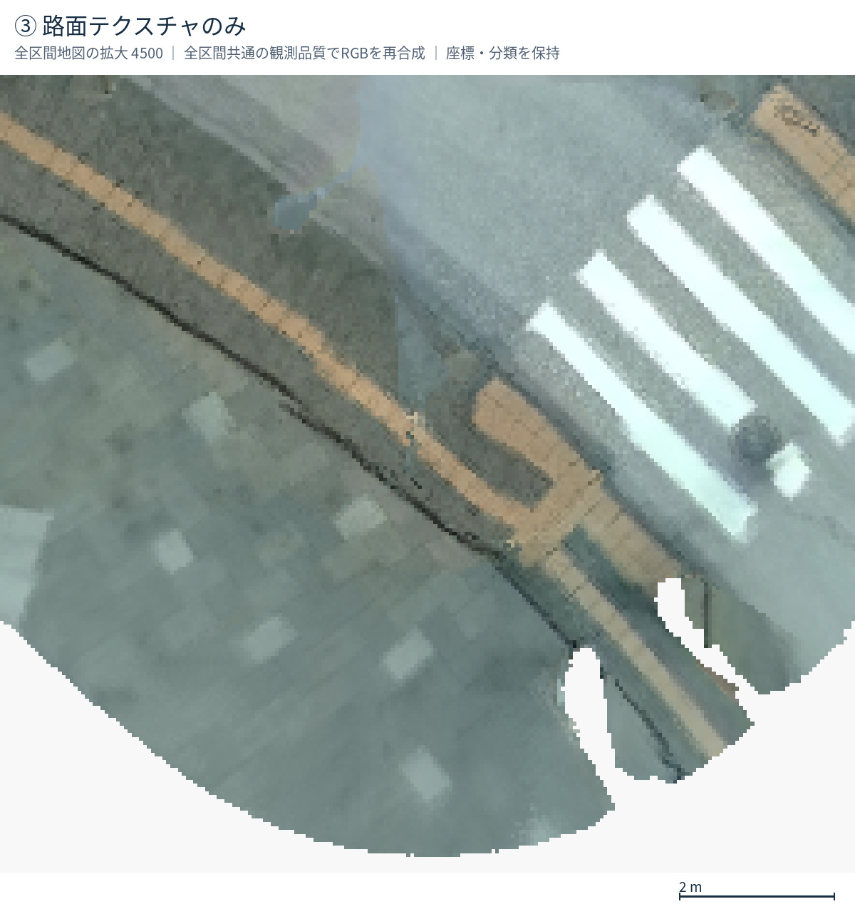
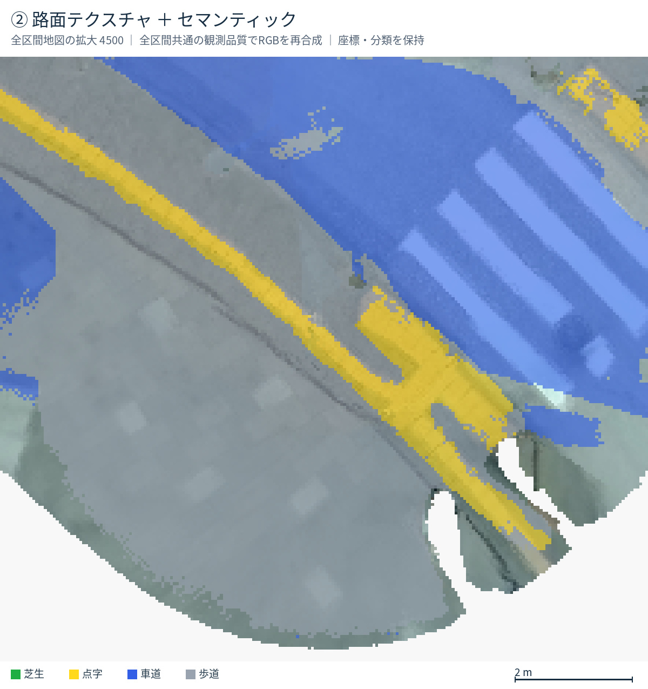
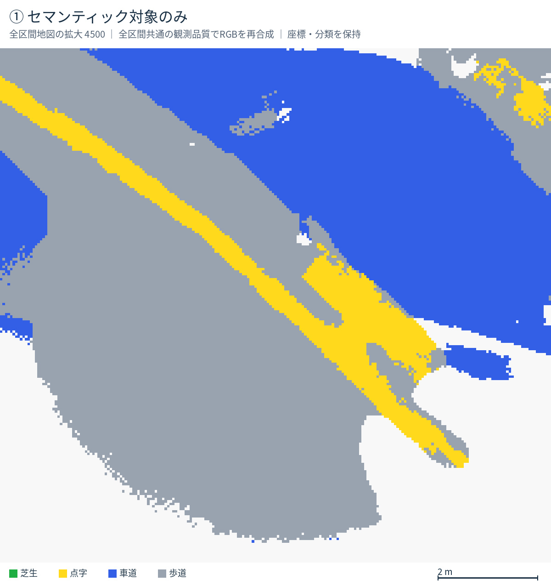

路面地図：3種類の画像
全5,956フレームのRGBを再合成した比較版です。全区間共通で良質な観測を優先し、遠く・斜めからの弱い観測による上書きを抑えます。座標・縮尺・セマンティック分類を保持。白線だけを変形する処理はありません。カメラモデル・撮影姿勢は既存のものを使うため、投影や軌跡に由来する歪みは残る可能性があります。
全体図（ROSBAG全区間）
③ 路面テクスチャのみ
② 路面テクスチャ ＋ セマンティック
① セマンティック対象のみ
拡大区間4500
③ 路面テクスチャのみ
② 路面テクスチャ ＋ セマンティック
① セマンティック対象のみ
ほかの検証区間